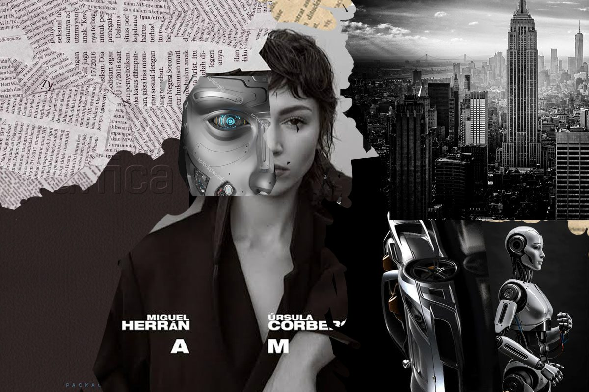
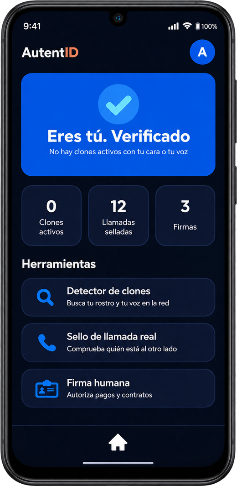
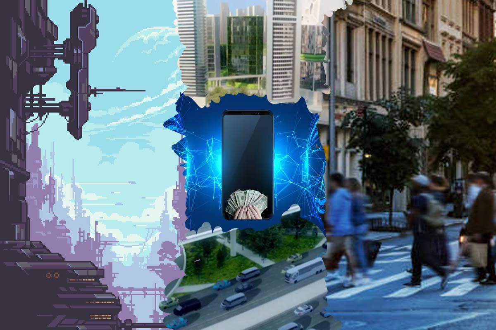
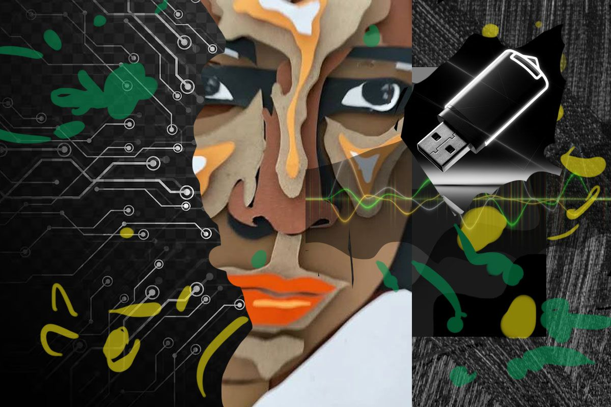
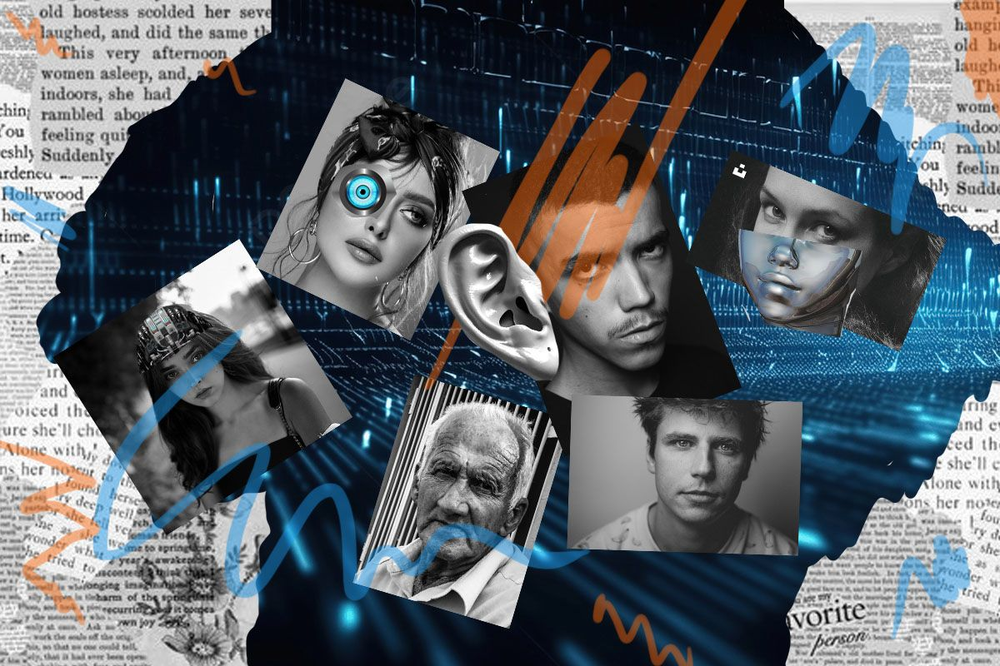
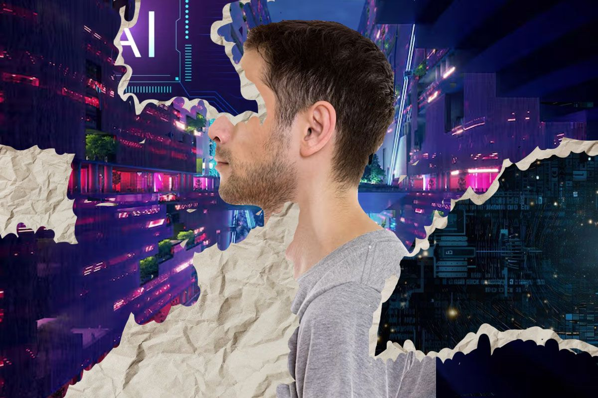
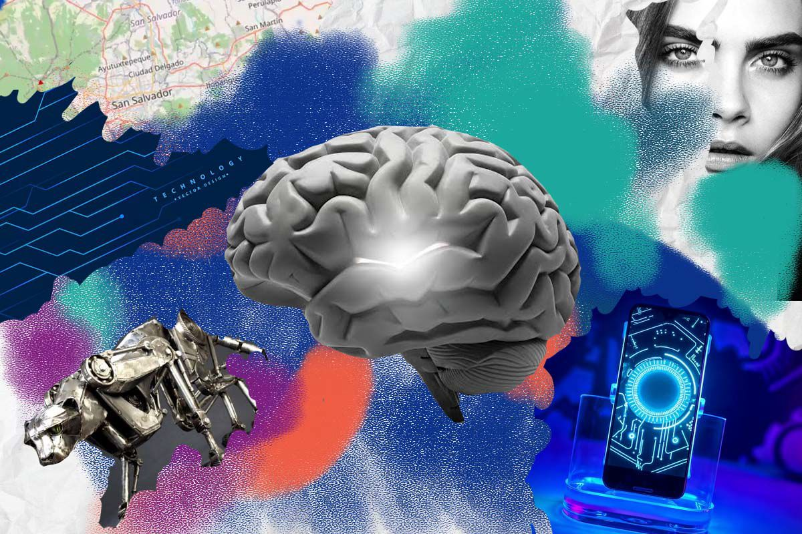
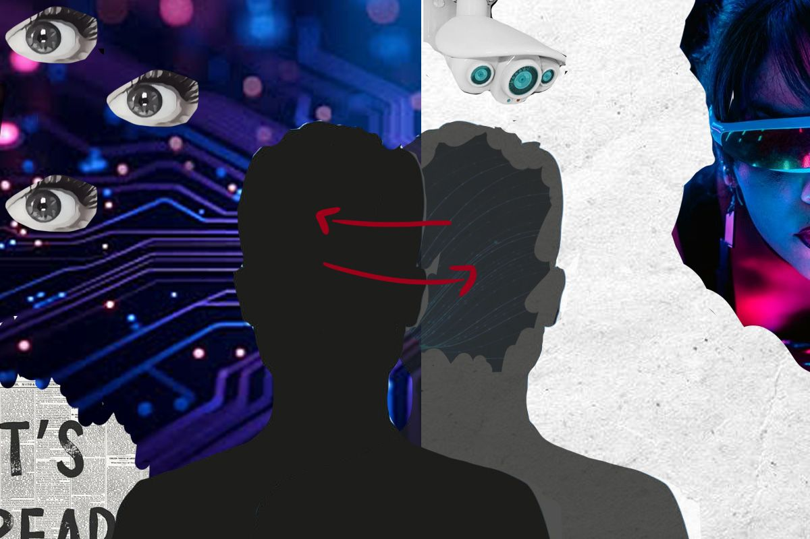

La ia en la vida diaria
Dejó de ser cosa de especialistas. Acompaña las decisiones, comunicaciones y trabajos de todos: entiende la voz, reconoce rostros y genera imágenes.
¿Ver es suficiente para creer?
Suplantación de Identidades y Clonación Digital No Autorizada

Dejó de ser cosa de especialistas. Acompaña las decisiones, comunicaciones y trabajos de todos: entiende la voz, reconoce rostros y genera imágenes.
Gran parte de la vida ocurre en entornos digitales. Perfiles, avatares y datos biométricos valen casi lo mismo que la identidad física.
Un rostro puede recrearse, una voz sintetizarse y una persona puede estar representada por un avatar que responde por ella.
Lo que piensan y cómo viven quienes habitan este mundo.
Podemos observar la diferencia de los años al conocer que se necesita antes y después para proteger nuestra identidad.
Contraseña
Documento
Fotografía
Rostro
Voz
Biometría
Comportamiento
Identidad digital
AutentID
Esta app ayudará a comprobar al instante si la persona con la que estás hablando por llamada o video es un ser humano real o una voz o rostro creado con inteligencia artificial.
Busca en internet a diario y te avisa si alguien usa tu cara o tu voz con IA sin tu permiso.
Un filtro de seguridad invisible en tus videollamadas que demuestra que eres tú y no un video falso.
Un código de seguridad al instante para autorizar pagos o contratos sin riesgo de engaños.
Si algo parece raro, devuelve la llamada a un número que ya conoces.
Una voz clonada no puede conocer una palabra secreta.
Las estafas con IA suelen exigir urgencia.
Repetir una frase o mover la cabeza es difícil de falsificar.

Empresas implementan nuevos sistemas para verificar identidades durante entrevistas virtuales.
La clonación de voz se convierte en una preocupación para instituciones financieras.
Los ciudadanos exigen mayor control sobre el uso de sus rostros y voces digitales.
El mundo en 2040





